ネイルケアが出来ません（自慢？） [梅吉]
梅吉の（私の）ネイルケア好きは相変わらずです。
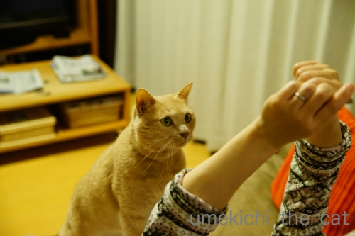
爪を磨く時が興奮度MAX！
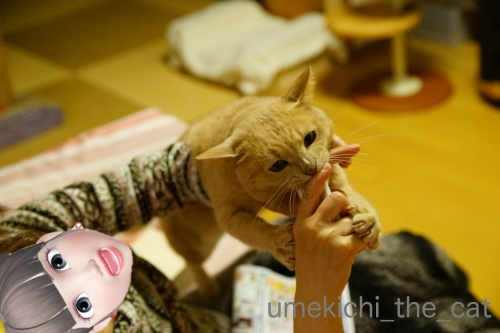
そんなにおかーさんに絡みたいですかー0(≧▽≦)0
（ケア用品をがぶがぶしたくてたまらないからだと思うけど(⌒-⌒;）
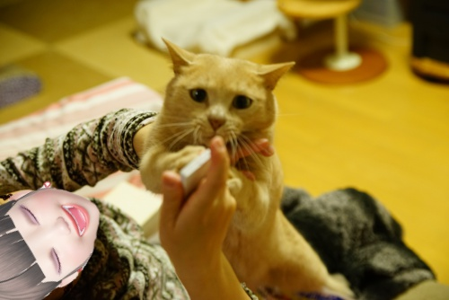
ケア用品、噛み心地は発泡スチロールみたいな感じ？
歯が「ぷす」っと刺さる様な。
かじっても良いんですけど口にグイグイ押し込むので
飲み込むんじゃないかと気が気じゃなくて・・・。
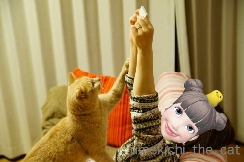
こんな状態なのでこの日もケアは中途半端。
リビングから遠い部屋で寝ているな、と思って
ケア用品を出して振り向くと梅吉がいます (-_-メ)
カリカリを保管しているクローゼットの扉を開けた時よりも早くやってきますよw
おっとが爪を切ろうとしても無反応。
（おっとは爪磨かないせいもありますけど）
私の時だけ飛んでくるんですよ。ふふふ(ΦωΦ)
でもちゃんとケアもしたいなー。
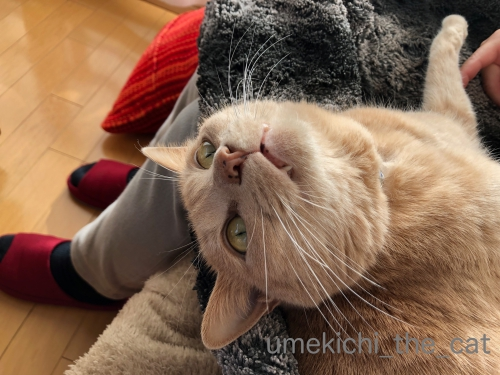
なにかと「絡んで来たい子」ちゃん。
あごニキビはかなりキレイになってきました！
化膿したりしなければ放っておくのが一番な様ですね。
寝る前のあごぽんぽん（消毒）は2日に一回くらいにしています。
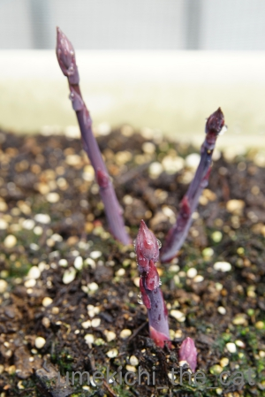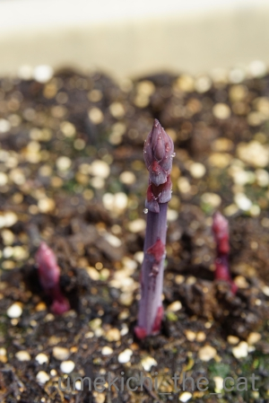
すっかり話題にしそびれていたプランターのアスパラ栽培。
上の写真は先月、3月23日に撮影したものです。
過去記事を調べてみたら2017年春に初めて収穫してます。
昨年で株が育ったのか今年はそれなりの太さものもの収穫出来てます。
採りたてを薄く斜め切りにして生のままにオリーブオイルと塩胡椒で食べるのが美味しいです＾＾
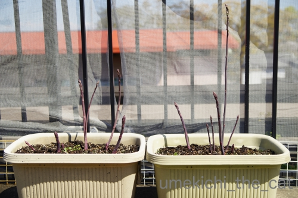
今週末のプランターはこんな感じ。
びよーんと伸びているのはこのまま伸ばしておきます。
収穫はGWの終わり頃くらいまでかな。
 ↑ガブッと一押し↑
↑ガブッと一押し↑
週末は長居公園に行って来ました。
右側に見えている大きなビルはあべのハルカスです。
我が家からだと往復＆公園内と植物園の散策で12.000歩くらい。
ちょうど良いお散歩コースなのです。
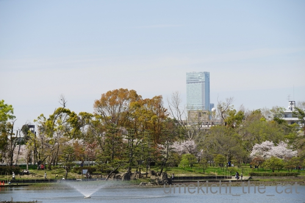
年間パスポート買って何年も通っている植物園なのに
桜の見頃に来たのは初めてかも。
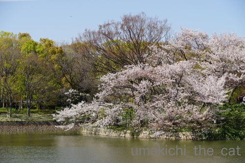
こんなにキレイだったっけ？と再発見。
来年はお弁当持ってお花見に来る場所の一つに加えなければ。
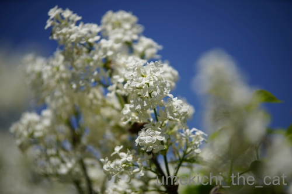
いつも茶色くなった状態しか見てなかった白いライラックも見頃。
桜の時期に一緒に咲くのね・・・_φ(･_･（来年の覚書です）
この後に紫のライラックが咲き出します。
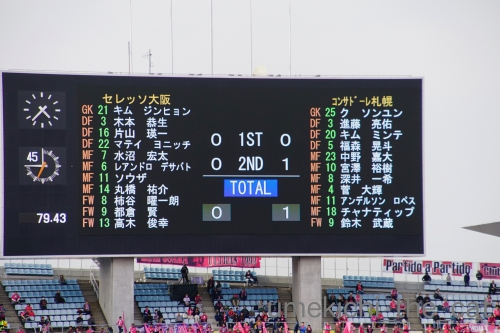
この日、長居に来たのはコンサドーレ札幌VSセレッソ大阪のサッカーの試合観戦の為。
応援するのはもちろんコンサドーレ札幌です＾＾
長居にはヤンマースタジアム（国際Aマッチをする方）と
キンチョースタジアム（スタンドが小規模：ラグビートップリーグはこっち）があります。
一度大きなヤンマースタジアムに入ってみたかったの(≧▽≦)
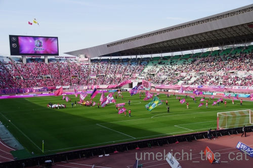
大きなスタジアムは迫力があって良いですねー。ピッチも見やすい角度に設計？
会場はセレッソ（スペイン語で桜）カラー、桜色に染まってますよ！
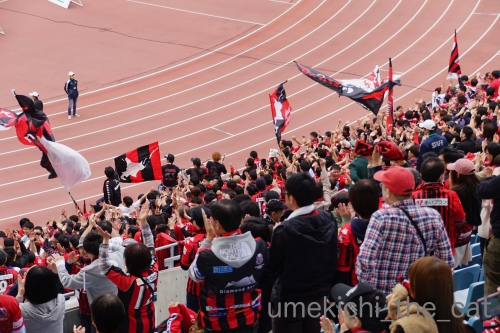
でも試合はコンサが１−０で勝ちましたよー。
盛り上がる観客席。北海道から見に来ている方もたくさんいらっしゃる様で
スタンド入り口通路にはスーツケースがたくさん置いてありました。
そんなふうに放置しておいても物が盗まれることのない日本ってすごい、と
感心するwww
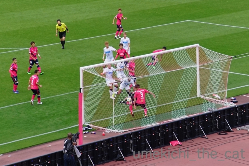
コンサ、ゴールの瞬間！
（白ユニです）
予想最高気温18℃の日だったのですが体感はもっと低かったです。
じっと座っていると寒くて寒くて・・・
ひざ掛け、マフラー、手袋、総動員して防寒しながらの観戦でした。
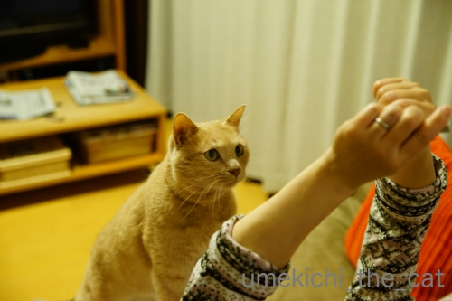
爪を磨く時が興奮度MAX！
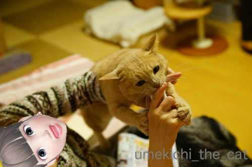
そんなにおかーさんに絡みたいですかー0(≧▽≦)0
（ケア用品をがぶがぶしたくてたまらないからだと思うけど(⌒-⌒;）
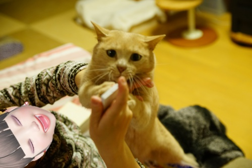
ケア用品、噛み心地は発泡スチロールみたいな感じ？
歯が「ぷす」っと刺さる様な。
かじっても良いんですけど口にグイグイ押し込むので
飲み込むんじゃないかと気が気じゃなくて・・・。
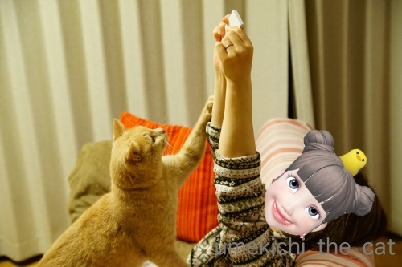
こんな状態なのでこの日もケアは中途半端。
リビングから遠い部屋で寝ているな、と思って
ケア用品を出して振り向くと梅吉がいます (-_-メ)
カリカリを保管しているクローゼットの扉を開けた時よりも早くやってきますよw
おっとが爪を切ろうとしても無反応。
（おっとは爪磨かないせいもありますけど）
私の時だけ飛んでくるんですよ。ふふふ(ΦωΦ)
でもちゃんとケアもしたいなー。
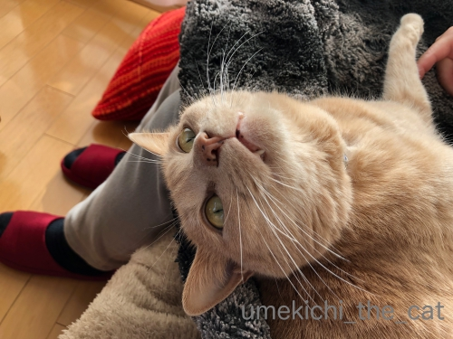
なにかと「絡んで来たい子」ちゃん。
あごニキビはかなりキレイになってきました！
化膿したりしなければ放っておくのが一番な様ですね。
寝る前のあごぽんぽん（消毒）は2日に一回くらいにしています。
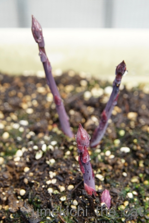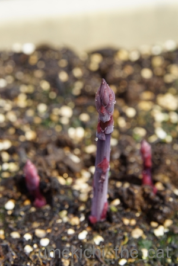
すっかり話題にしそびれていたプランターのアスパラ栽培。
上の写真は先月、3月23日に撮影したものです。
過去記事を調べてみたら2017年春に初めて収穫してます。
昨年で株が育ったのか今年はそれなりの太さものもの収穫出来てます。
採りたてを薄く斜め切りにして生のままにオリーブオイルと塩胡椒で食べるのが美味しいです＾＾
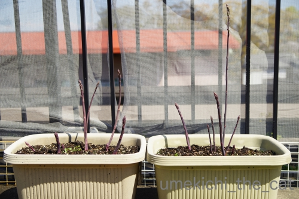
今週末のプランターはこんな感じ。
びよーんと伸びているのはこのまま伸ばしておきます。
収穫はGWの終わり頃くらいまでかな。
週末は長居公園に行って来ました。
右側に見えている大きなビルはあべのハルカスです。
我が家からだと往復＆公園内と植物園の散策で12.000歩くらい。
ちょうど良いお散歩コースなのです。
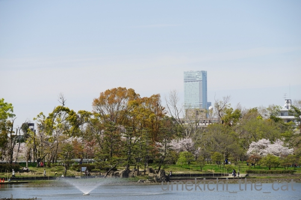
年間パスポート買って何年も通っている植物園なのに
桜の見頃に来たのは初めてかも。
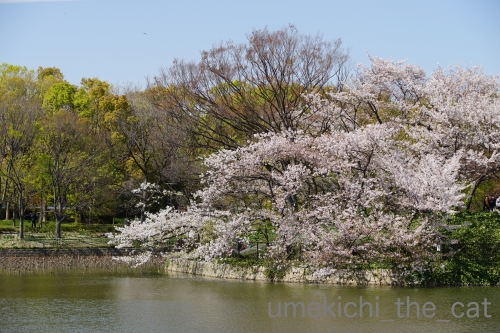
こんなにキレイだったっけ？と再発見。
来年はお弁当持ってお花見に来る場所の一つに加えなければ。
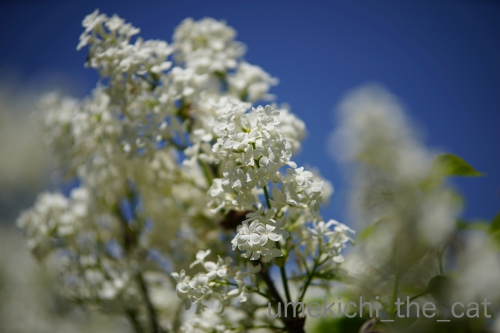
いつも茶色くなった状態しか見てなかった白いライラックも見頃。
桜の時期に一緒に咲くのね・・・_φ(･_･（来年の覚書です）
この後に紫のライラックが咲き出します。
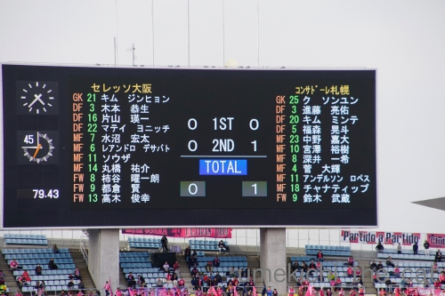
この日、長居に来たのはコンサドーレ札幌VSセレッソ大阪のサッカーの試合観戦の為。
応援するのはもちろんコンサドーレ札幌です＾＾
長居にはヤンマースタジアム（国際Aマッチをする方）と
キンチョースタジアム（スタンドが小規模：ラグビートップリーグはこっち）があります。
一度大きなヤンマースタジアムに入ってみたかったの(≧▽≦)
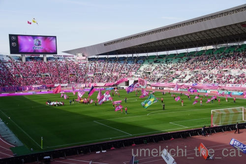
大きなスタジアムは迫力があって良いですねー。ピッチも見やすい角度に設計？
会場はセレッソ（スペイン語で桜）カラー、桜色に染まってますよ！
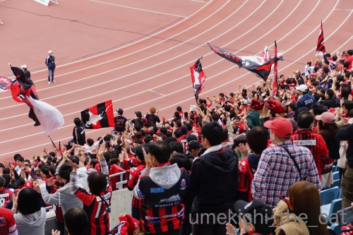
でも試合はコンサが１−０で勝ちましたよー。
盛り上がる観客席。北海道から見に来ている方もたくさんいらっしゃる様で
スタンド入り口通路にはスーツケースがたくさん置いてありました。
そんなふうに放置しておいても物が盗まれることのない日本ってすごい、と
感心するwww
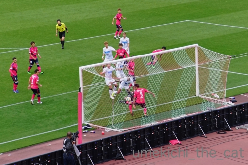
コンサ、ゴールの瞬間！
（白ユニです）
予想最高気温18℃の日だったのですが体感はもっと低かったです。
じっと座っていると寒くて寒くて・・・
ひざ掛け、マフラー、手袋、総動員して防寒しながらの観戦でした。

カフェオレ色の梅吉

梅吉 2023年8月10日 永眠


梅吉と出会った譲渡会

犬猫の理由なき殺処分ゼロ
妄想広告
UMEKICHI 光

爆発的に早い！
時々攻撃的！
Thanks to Mr.Boss365
爆発的に早い！
時々攻撃的！
Thanks to Mr.Boss365

梅吉さんの大コーフンお目目キラリンののけ反り顔でよく分かります。ちぃさんも楽しんでますねー。
by zombiekong (2019-04-15 01:35)
爪のお手入れがお好きというより、梅吉さんに邪魔されるのがお好きって感じ？
どんなところが梅吉さんの心を捉えちゃうんでしょうね。
ちなみに私は爪のお手入れ好きじゃなくて、切りっぱなしです(^^;;
by ChatBleu (2019-04-15 05:36)
熟睡してると思ったら後ろに居る。
あるあるです＾＾
by ぽちの輔 (2019-04-15 06:43)
梅吉さんはオシャレだから、爪のお手入れ大好きなんですね〜^^。
お目目キラキラ、楽しそうです。
うちのきっちょむも、あごニキビありますよ。
いままでも割と男のコには多いかな、傷にならなければ、放置してますけど。
by nachic (2019-04-15 06:58)
やっぱり猫は好きな音があるんですね。
微妙な物音にすぐに反応する・・・さすが梅吉さんです(^^)
by kou (2019-04-15 07:04)
中学生まで東住吉区にいたんで、長居公園は
よくチャリンコで行ったりしてました。
こんなでかいスタジアム出来てからは一回も
行ってませんけどねー(^_^;)
by よーちゃん (2019-04-15 08:42)
梅吉くん、興奮してますね〜(笑)
爪磨きや爪やすりはうみちゃんも好きだからな〜ｗｗ
興奮してる梅吉くんの気持ち分かります^^
あごニキビ治ってきて良かったね♪♪
サッカーも野球も、やっぱりスポーツは現地でその場の熱気や空気を感じると楽しいよね。
でもドームじゃないとこの季節は寒い！！(笑)
by リュカ (2019-04-15 09:27)
こんにちは。
梅吉君の「食いつき度」が良いですね。十分自慢出来ます（笑）
ストーカーのような瞬間移動？（笑）探す手間なくて便利です。
梅吉君！！無心の表情と手の格好が素晴らしいです。
ZEPETOの機能？凄いですね。ちぃさん、喜びの笑顔です（笑）
長居公園、お天気も良く長閑な雰囲気ですね。散歩コースは体に良さそう。
スタジアムがあるのが何より好感がもてます。
ところで、ご主人様は、スポーツ好きみたいですね！？(=^･ｪ･^=)
by Boss365 (2019-04-15 10:59)
天まで届けとばかりに伸ばしたちぃさんの手(≧▽≦)
梅吉さんの目は何かにとりつかれてる・・・^^;
ほんと耳がいいお猫様。それも都合のいい事しか聞こえない便利な猫耳。
内緒で家の中で何かしようというのは諦めました。
Ｊリーグが発足した当初はよく長居へ行ってました。
野球のように守りの間にトイレ行こか～というわけにいかないサッカー。
防寒は必須ですね^^
by ゆきち (2019-04-15 12:30)
一つ前の記事の花、ネモフィラって言うんですね。
私が土曜日に撮った画像に入っていました。私も載っけりゃ良かった！
それと、
お弁当画像が楽しみだったんですが、^^;
by 小松達也 (2019-04-15 12:40)
昨日、エキスポシティに買い物に行ったら、パナソニックスタジアム吹田に来たファンでごった返してました(・ω・;＃)
ガンバvs浦和だったようです。
by ともち (2019-04-15 16:02)
梅吉さんのお目目は、
ちぃさんの爪にロックオンしてますね（笑）
しかも、真剣集中MAXのようです。
ちぃさんの高い笑い声が聞こえてきそうな（笑）
週末のサッカーはお天気が良くて幸運でしたね。
日曜日、娘は野球観戦でした。
屋根がある席とはいえ、スポーツ観戦は晴れが良いですね。
甲子園ってドーム？と聞くと、飽きれ顔で
甲子園だよ！と言われました（笑）
この時、高校野球を思い出しました（笑）
あごニキビ、治理ましたね。
良かった。
by kiki (2019-04-15 16:06)
『振り向くと梅吉がいる』
ちょっとしたサスペンスみたいな、
ちょっとしたホラーみたいな
展開ですね(*´艸`)ﾌﾌ♪
by あとりえＳＡＫＡＮＡ (2019-04-15 19:28)
何故ネールの時だけ来るのでしょうか？
梅吉さん、匂いが好きなのかな？
振り返るとそこに梅吉さんですね(^^)
by ma2ma2 (2019-04-15 20:03)
梅吉くんの目がいつもと違う！！ランランって感じ(*^^*)
あごニキビ治って良かった！
by palpal (2019-04-15 20:28)
絡まれたいな。
何でもいいから。
幸せなひと時ですね＾＾
お弁当を食べながらのお花見は、最高ですね。
花見弁当が食べたいです＾＾
by riverwalk (2019-04-15 20:30)
梅吉く～ん、これじゃ本当にネイルケア出来ないよ～
この顔、うちでもよく見る顔！ちょっと貸してみ的なｗ
対象物しかみていないのよね。単純で可愛いね～(≧▽≦)
傍から見たらじゃれ合っているようにしか見えないんだけど
知らない間に小さな傷ができていたりするんだよね。
あごにきびもよくなって良かったね。
by emi (2019-04-15 21:01)
梅吉さん、目が寄ってる～～！^^)
ネイルケアしている時の手のしぐさが
気になるのでしょうか、むむむ。
紫色のアスパラが何気に珍しいと思うのは
私が単に無知だからでしょう。^^;
by yes_hama (2019-04-15 21:32)
爪磨きで興奮するんだ（ﾟ□ﾟ）
ぁっ、アスパラガスは昔は観賞用だったらしいね。
何を観賞するのやら？（ﾟ□ﾟ）
by 英ちゃん (2019-04-16 00:22)
採れたてのアスパラ、、おいしそう！
そして梅吉くん、最後の写真のでろーんとした顔もかーわいい＾＾
by liang (2019-04-16 06:35)
振り返ると梅吉さん面白いですね^^
by ニコニコファイト (2019-04-16 06:50)
梅吉さん、目がまん丸でテンションUPですねぇ♪( ´▽｀)
ネイルケアでこんなに興奮して絡んでくれるなら
私も挑戦してみようかな=(^.^)=→うちのニャンズが私に絡んでくる
可能性があるかどうかはわからないけどw
by ニッキー (2019-04-16 07:23)
すごい食いつきようですね(´∀｀*)
爪を削った匂いがいいのかしらーー？？
向こうにいるスキに！と思ってお手入れ始めると
気が付くと横にベッタリ！！ってよくわかります(笑)
うちの場合は「食べ物(甘いもの)」ですけどねｗｗ
お手手出したりしているところがたまらなくかわゆい❤
絡んできてほしくて、わざと爪磨きを取り出したり
してしまいそうです(*´艸｀*)
長居公園、お花見も出来るのですね！バラ園もあります？
バラを見に行くお誘いがあったような？？(たぶん)
by カトリーヌ (2019-04-16 11:34)
梅吉さんてば、かまってちゃんですな(笑
ZEPETOの画像、私も自撮りしてみたら、オリジナルの
顔ができるんだ！と発見しました。使ってませんが(;^_^A
爪のケアのオイルに反応しているのでしょうか？
アスパラって収穫前は紫色なのすか？ 先日ランチで行った芦屋の店の
ホワイトアスパラは美味しかった。もっと普及してほしいです。
by marimo (2019-04-16 20:21)
キッラキラなお目目にキレッキレの攻撃力！
「それ、わしのやでー！かえしてんかー！」そんな表情にも見えます^^
よく、ドラッグストアで袋にいくつか入ったスポンジ（いろんな形の）
あるじゃないですか。あれも好きそう。
アスパラいいですね、ニョキニョキ・・・春を感じます。
（セレッソ＝桜・・・はじめて知りました）
by Ja-Kou66 (2019-04-16 23:53)
zombiekongさん＞
私が楽しんでいるのバレましたかw
爪は普通に切れるのでまぁOKなのです＾＾
ChatBleuさん＞
爪はほっとくと弱く脆くなっちゃうので
お手入れは本気にちゃんとしたいのですー。
がこんな状況なので隙を見てちょっとずつやってますw
ケア用品をがぶがぶしたいのもあるけど
幼い頃は切った爪を食べちゃったりしてたので
爪そのものも好きみたい。タンパク質補給！？(*>艸<)
ぽちの輔さん＞
そうなのです！
呼んでも来ないくせに来なくて良い時は来る！！
nachicさん＞
今一番食いついてくる遊び（？）です(*>艸<)
オシャレさんなので自分の爪も黙って切らせてくれますよ＾＾
あごニキビの子、多いですね！
病院でも「必要以上にいじらんといて〜」みたいに言われましたw
この人しつこく手入れしそうって思われたのかしら(*>艸<)
kouさん＞
どんなにこっそりしてもやってきますよw
普段呼んでも来ないのは聞こえないから？って思ってましたが
そんなことはないんですねー(*>艸<)
よーちゃん＞
長居公園、
最近は手ぶらで行ってバーベキューを楽しめるエリアが出来たりしてます。
変わり様にびっくり！ですよー(≧▽≦)
リュカさん＞
なんでこんなに爪磨きや爪やすりが好きなんでしょうねw
どんなにこっそり準備しても間違いなくやってくるし
今日なんて爪を切ろうかな・・・と思っただけで
お風呂の蓋の上で寝てたのにやってきたわ！！
札幌では野球もサッカーも札ドで見てたから
暑かったり寒かったり大変だっていうのは
大阪に来てから知ったわー(-_-メ)
Boss365さん＞
今一番梅吉を呼び寄せるのはネイルケア用品なのは間違いないですw
ベランダにいても走ってくるのか今度試してみよう・・・
長居公園は大阪におけるスポーツの聖地って感じでしょうか。
二つのスタジアムの他に陸上用のトラックもあって
（アメフトもよくやってます）
一年を通して毎日曜ごとに学生の大会をやってます。
遊んでいる人ランニングしている人楽器の練習している人
将棋指している人などなど、住民の憩いの場って感じでーす＾＾
スポーツ、しませんけど夫婦二人とも見るのは大好きです！
ゆきちさん＞
どんなに高く手をあげても（腕、短いんですけどねw）
食らいついてくる梅吉が面白くて精一杯伸ばしてみました＾＾
ケア用品への執着は本当にすごくて
何かに取り憑かれているとしか思えないですwww
前世で何かあったんでしょうか(⌒-⌒;
ヤンマースタジアム、初めて入りましたが「女子トイレがたくさんある！」と
妙なところに感心しながら帰ってきました。
あれが国際基準ってやつなんですね！！
小松達也さん＞
ネモフィラは女子に人気がありますよ！
せっかく写真とったならアップしましょうよー＾＾
お弁当、買ったものばっかりでブサイクだったので自粛しました(*>艸<)
ともちさん＞
パナスタに行く方のほとんどが
エキスポシティで買い物して行きそうですw
日常の買い物に利用している方はイベント時大変ですよね！
kikiさん＞
梅吉が今一番真剣に取り組んでいるのが
ネイルケア時のお手伝いのようです(*>艸<)
私の笑い声、写真に写っているようですね！
そうです！とっても嬉しそうに「やめてよー！！」とか言いながら
ゲラゲラ笑っています(≧▽≦)
甲子園はドーム？
kikiさんの目には未来が写っているのかもしれません。
高校球児のためにも屋根つけて欲しいですねー。
by ちぃ (2019-04-17 16:26)
あとりえSAKANAさん＞
ホラー映画よりびっくりしますよw
私ホラー映画を見ても叫んだりしない人なんですが
突然現れた梅吉を見て「あ”〜〜！！」って(*>艸<)
「きゃー」って言えずに
なぜか男らしい声が出ちゃいますよwww
ma2ma2さん＞
爪（幼い頃は食べてましたw）も好きだし
ケア用品も好きだし「好きなことだらけ」なのでしょうねぇ・・・
思ってもいないタイミングで現れるのには毎回びっくりです！
palpalさん＞
何かに取り憑かれいてるんですよ・・・この目は(*>艸<)
食べ物よりも執着しているかもー！
riverwalkさん＞
そうなんです！困ったと言いながら幸せなひと時0(≧▽≦)0
梅吉が来ないと（今までそんな事は無いのですが）
物足りなくてしょうがありませんw
お花見弁当は年に一度の楽しみですものね！
あ、でもうちは「あれが咲いた、これが咲いた」と
何かと理由をつけてお花見弁当食べてます＾＾
emiさん＞
そうなの！もうケア用品しか見てないですw
じゃれつく時は爪出す事なんて無いんだけど
夢中でケア用品に爪たてるのが私にも引っかかってね。
普段ない事なのでそれも新鮮だなって楽しんでますよ♪
顎ニキビは気にしないのが一番なのねー！
子供の頃に飼ってた猫には黄色い塗り薬つけてて
全然治らなかったのに・・・・
猫医療も進歩＆研究が進んでるんだね＾＾
yes_hamaさん＞
爪にも興味ありありなんですが（幼い頃は爪を食べましたw）
ケア用品が気になって仕方ないようです＾＾
梅吉にお許しいただける範囲でケアするようにしていますよw
おお！北海道では紫のアスパラも売ってますが
大阪では滅多に見ません！苗は売ってたのに。
味は緑のと一緒ですよー＾＾
英ちゃんさん＞
何故か爪磨きが好きなのです(*>艸<)
アスパラ、育つと葉っぱが多少なりとも涼しげだからでしょうか・・・
うちは株を育てるために今後ボーボーに育てて鑑賞します＾＾
liangさん＞
採れたてのアスパラは生でも食べられます！
甘さがあって美味しいのですよー＾＾
とれたての味を知ってしまうと
スーパーで買ったものは味が薄いなって思っちゃいます(⌒-⌒;
ニコニコファイトさん＞
振り返って「ひっ！」ってびっくりしますよwww
ニッキーさん＞
爪のお手入れ＆ニャンズさんのふれあいタイム・・・・
になると良いのですが！
やってみる価値あるかもしれません！！
ぜひぜひお試しくださいませm(_ _)m
新たな世界が開けるかもしれません・・・
by ちぃ (2019-04-17 17:56)
カトリーヌさん＞
爪も大好きなんですが（幼い頃は食べましたw）
爪を光らせるケア用品が特にお気に入りで。
食感（笑）がよく似ていたペディキュアするときに使うセパレーターを
ガブガブしてダメにした過去ありですwww
ミュウたんは甘いもの！
爪切る頻度より登場する回数が多いと思うのですが（私だけ？）
諦めていただくのが大変そうです。
長居のバラ園は見応えありますよー。
お弁当食べながら眺めることもできます。
毎年GW頃から咲き始めるのでぜひぜひ出かけてみてください！
marimoさん＞
梅吉は超かまってちゃんです！とっても甘えん坊だし(*>艸<)
ZEPETOの自撮り機能、うまく使えないので使ってませんw
これは絵文字を加工して貼り付けました。
私にとってはこの方が簡単で(⌒-⌒;
このアスパラは紫アスパラなんですよ。
味は緑のと変わらないんですが彩りとして使えるので
北海道では時々売っているのを見ます。
ホワイトアスパラは茹でてもグリル焼きにしても美味しいです！
大阪のデパ地下で売っているのは鮮度下がってて高いので
買ったことありません。
生協の個配で扱っているのでシーズン中はそれを買って食べてまーす＾＾
Ja-Kou66さん＞
色んな形のスポンジ、使ってますよw
そしておっしゃる通り梅吉の大好物でーす(*>艸<)
洗って干しておくと間違いなく獲物になってます。
セレッソ＝桜、私も大阪に住むまで知りませんでしたよー＾＾
by ちぃ (2019-04-17 21:04)